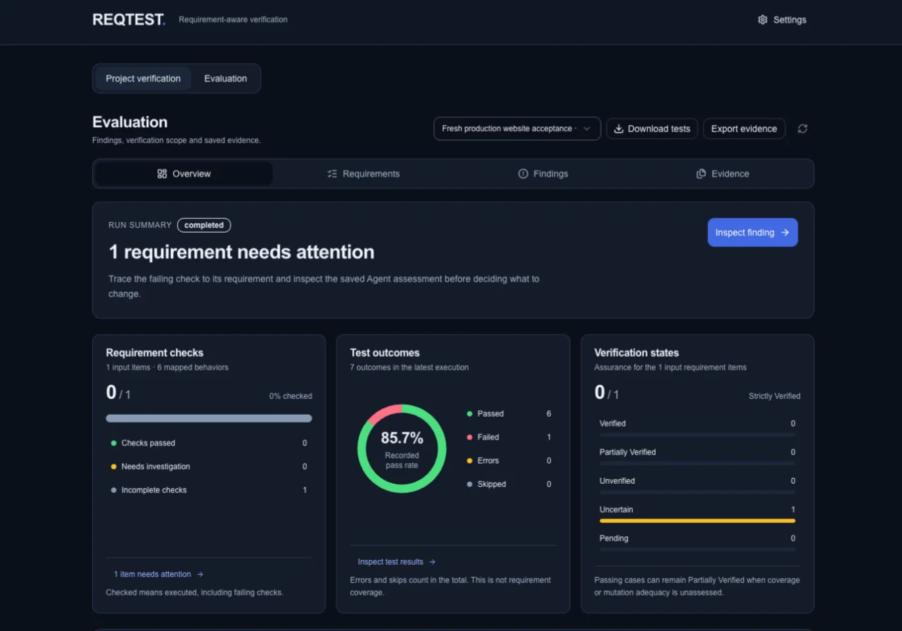

Background and goal
A passing test does not prove that the original requirement was fully verified. ReqTest connects source requirements, mapped behaviours, test assertions, execution results, and failure diagnosis so reviewers can inspect the evidence behind each conclusion and see what remains uncertain.
My contribution and team outcome
My contribution
- Requirement decomposition and requirement-code-test traceability methods.
- The understand-generate-execute-diagnose-review agent workflow.
- Prompt engineering, tool-use strategy, and evaluation metrics.
- Controlled comparisons and discussion of failure-diagnosis boundaries.
System delivered by the team
- GitHub/ZIP import and document-source references.
- Docker-isolated execution, test review, and queue recovery.
- Private PostgreSQL reports, evidence chains, and export.
- Responsive evaluation views, charts, and saved-suite replay.
Agent architecture
Every conclusion retains requirement, behaviour, test, and execution links.
Prompt and tool design
- Prompts require citations to the original requirement and source evidence.
- Generated tests pass structural and safety review before Docker execution.
- Only failures diagnosed as generated-test errors may receive one reviewed revision.
- Potential product defects preserve the original assertion instead of weakening the test.
- Large projects use logged file selection and context budgets so omitted scope remains visible.
Evaluation method and observed result
The retained v16 real-project study covered Click, Packaging, and Werkzeug across 18 workflows. Baseline B1 generated 54 test artefacts: 53 passed and one failed. The remaining failure came from an incorrect assumption about callback execution order; after diagnosis, the corrected test passed against a separate unchanged source copy, producing 54 recorded passing cases.
This is a traceable observation, not a general accuracy claim or proof of superiority. Independent semantic-accuracy labelling and user-effect studies remain future work.
Technical challenges and solutions
A citation does not guarantee semantic correctness
The workflow preserves exact provenance while keeping conservative verification states. Evidence shows where a claim came from; evaluation still decides whether it is correct.
A failed generated test has two possible causes
The system separates product defects from test-generation errors. Diagnosis must cite requirements, code, tests, and execution logs, and revision attempts are limited.
Large repositories exceed context limits
Requirement terms, mapped paths, and transitive local imports select complete files while recording omitted hashes and the context budget.
Product interface

